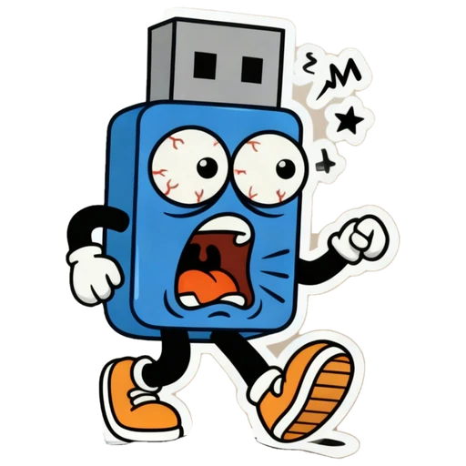
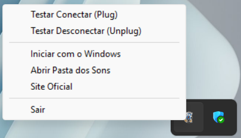
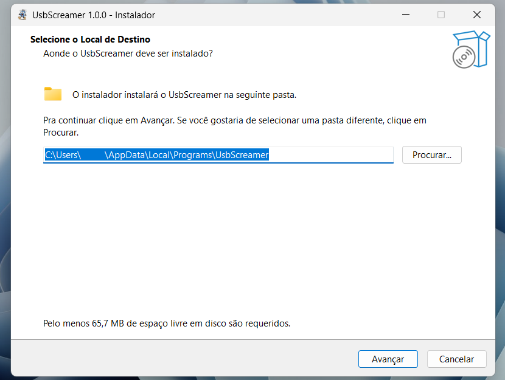
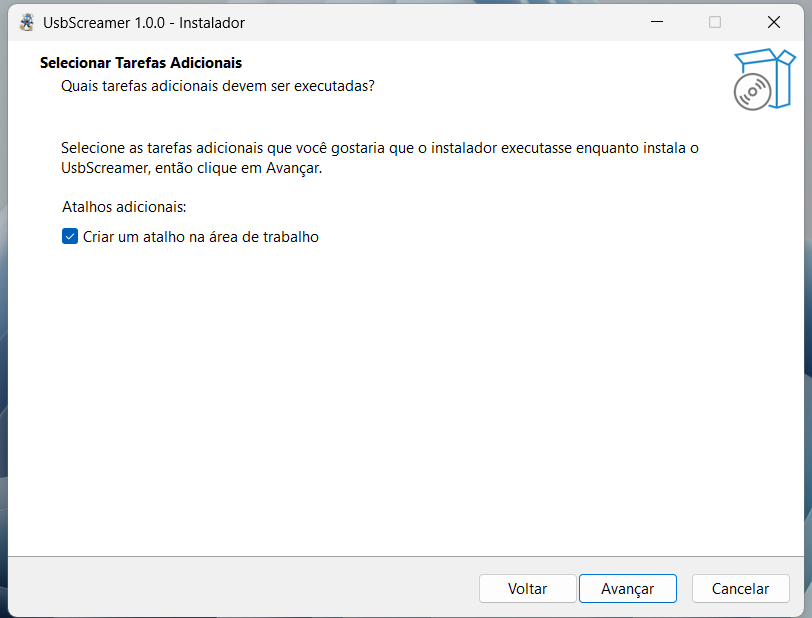
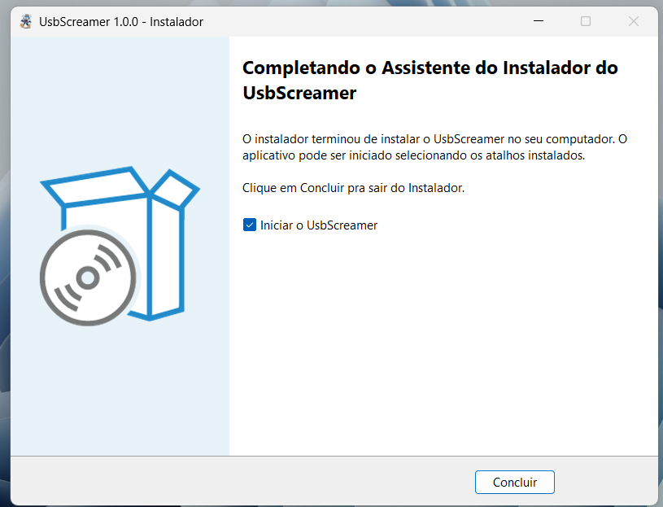

Conecte o USB.
Ele vai gritar de volta.
Chega daquele som padrão e sem graça do Windows. Um utilitário nativo, silencioso na bandeja do sistema, personalizável e imprevisível ao plugar.
Teste o Áudio Agora
Amostra OficialClique nos botões abaixo para simular os efeitos ao plugar ou ejetar seu dispositivo.
O que ele faz
Sons 100% Personalizáveis
Use o botão "Abrir Pasta dos Sons" no menu da bandeja para colocar qualquer meme ou áudio WAV que quiser.
Ultraleve (< 15MB RAM)
Loop assíncrono nativo de baixo impacto. Sem frameworks pesados ou consumo de CPU em background.
Menu Rápido na Bandeja
Acesso direto a testes manuais de áudio, inicialização com o Windows e atalho direto para a pasta de arquivos.
Sem Permissões UAC
Instalação direta no espaço do usuário (%LocalAppData%), sem exigir privilégios de administrador.
Veja o menu na bandeja

Arquitetura Interna
Desenvolvido com Python 3 e API Win32 nativa, empacotado como binário direto para resposta imediata sem atraso de áudio.
UsbScreamer (Runtime)
├─ Win32 Mutex (Instância Única Anti-Duplicação)
├─ Polling Loop (GetLogicalDrives + DRIVE_REMOVABLE)
├─ Audio Player (winsound WAV Assíncrono com Elif Priority)
├─ System Tray Daemon (pystray + Menu de Teste/Pasta)
└─ Windows Registry (HKCU Run Persistence)Como instalar (e a tela azul do SmartScreen)
- Baixe e extraia o ZIP recebido após a compra e execute o
UsbScreamer_Setup.exe. Ele não pede senha de administrador: instala só para o seu usuário. - Se aparecer "O Windows protegeu o computador": o UsbScreamer é um projeto independente e ainda não tem certificado digital pago, por isso o Windows mostra "Editor desconhecido". Isso não indica um vírus, apenas que o app ainda não tem reputação junto à Microsoft. Clique em Mais informações e depois em Executar assim mesmo.
- Siga o instalador normalmente. O ícone aparece na bandeja, perto do relógio.



Clique nas imagens para ampliar.
Quer conferir antes de instalar?
SHA-256 do UsbScreamer_Setup.exe (v1.0.0, o arquivo dentro do ZIP):
32F96B293EDEA2C24A3419EE9AC037F7F6AD6C5FEE1C040F43E86CCC91D35171O código-fonte é aberto (MIT): github.com/brenolab-py/UsbScreamer.
No PowerShell, na pasta do arquivo:
Get-FileHash .\UsbScreamer_Setup.exe -Algorithm SHA256Os valores devem ser idênticos. Se não forem, não instale e fale comigo em brenopd.lab@proton.me.
O programa não acessa a internet, não coleta dados e não deixa o pendrive "em uso" na hora de ejetar. Para desinstalar: Configurações → Aplicativos.
Perguntas Frequentes
Posso trocar os sons padrão por outros áudios?
Sim! Basta clicar com o botão direito no ícone da bandeja, selecionar "Abrir Pasta dos Sons" e substituir os arquivos plug.wav e unplug.wav pelos seus próprios áudios. Você pode testá-los na hora pelo próprio menu.
Funciona com qualquer dispositivo USB conectado?
O UsbScreamer monitora especificamente pendrives e cartões de memória removíveis (DRIVE_REMOVABLE). Ele não dispara com mouses, teclados ou fones de ouvido para não poluir sua experiência, e ignora HDs/SSDs externos reconhecidos pelo Windows como discos locais fixos. Alguns pendrives também podem ser classificados como discos fixos pelo Windows e não disparar o som; se isso acontecer, peça reembolso dentro da garantia. Leitores de cartão só são detectados quando o cartão é inserido em uma unidade que o Windows trate como removível.
O Windows SmartScreen pode exibir um aviso azul?
Sim. Por ser um programa independente e recente, sem certificado digital pago e sem reputação ainda junto à Microsoft, o Windows pode alertar sobre um "editor desconhecido". Basta clicar em "Mais informações" e depois em "Executar assim mesmo". Você também pode conferir o SHA-256 do instalador na seção Como instalar. O programa funciona 100% offline e não envia nenhum dado.
Como recebo o programa após a compra?
O instalador (UsbScreamer_Setup.exe compactado em ZIP) é liberado imediatamente na tela de confirmação e enviado diretamente para o seu e-mail assim que o pagamento for aprovado na Kiwify.
E se não funcionar no meu computador?
Você tem 7 dias de garantia com reembolso integral. Veja os detalhes na política de reembolso.
Funciona em quais versões do Windows?
Feito para Windows 10 e Windows 11 (edições de 64-bit).
Política de reembolso
Garantia de 7 dias. Se o UsbScreamer não funcionar como você esperava, devolvemos o valor pago, em até 7 dias após a compra.
Como pedir: envie um e-mail para brenopd.lab@proton.me com o e-mail usado na compra. Se algo não funcionou, conte o que aconteceu: ajuda a corrigir, mas não é obrigatório para o reembolso. Você também pode solicitar pela própria Kiwify.
Prazos: respondemos em até 2 dias úteis e o valor é devolvido pelo mesmo meio de pagamento após a aprovação, no prazo da Kiwify.
Antes de pedir reembolso: se tiver dificuldade com a instalação ou com o aviso do SmartScreen, escreva para o mesmo e-mail que ajudamos.
Menos de dez reais. Risadas garantidas toda vez que plugar e desplugar um pendrive.
Garantir UsbScreamer por R$ 9,99